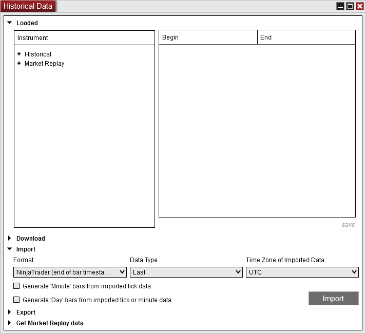
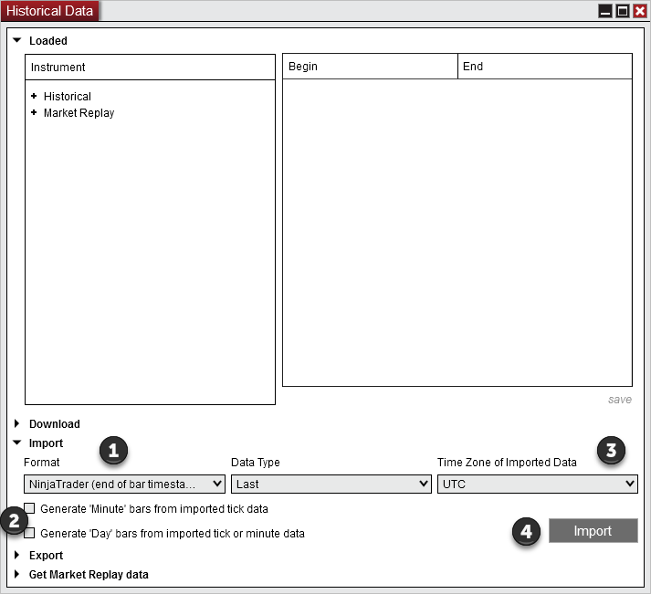
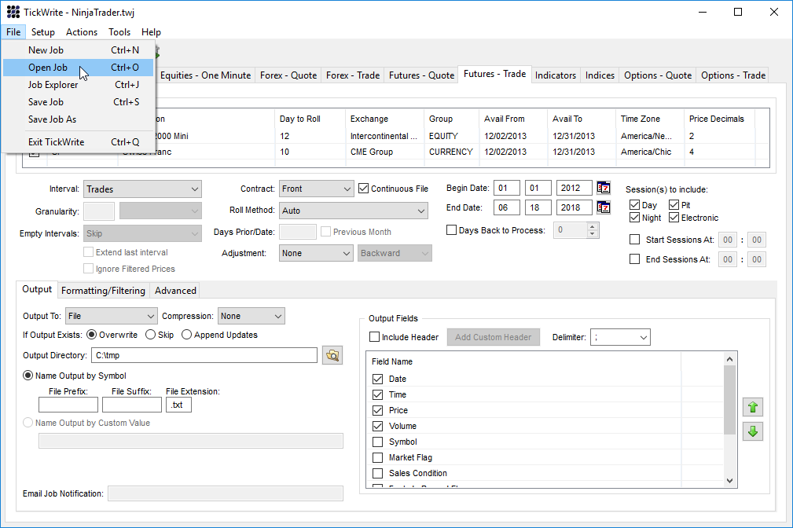

|
<< Click to Display Table of Contents >> Importing |


|
Importing
|
<< Click to Display Table of Contents >> Importing |
|
Historical data can be imported from a text file with a ".txt" extension within the Loaded section of the Historical Data Window. Several formats and data types are supported and NinjaTrader can optionally build 'Minute' bars from tick data as well as 'Day' bars from tick or minute data.

Understanding import optionsThe following formats and options are available when importing a text file:
Format Select one of three options available in the Format drop down menu:
1.NinjaTrader (timestamps in import file(s) represent end of bar time) 2.NinjaTrader (timestamps in import file(s) represent start of bar time) 3.Tick Data, LLC
Data Type Select one of three options available for the data type:
1.Ask - Data values in the text file represent historical Ask prices 2.Bid - Data values in the text file represent historical Bid prices 3.Last - Data values in the text file represent historical Last prices (trades) Time Zone of Imported Data Select the time zone of the data you are importing (not the time zone you are importing to as all imported data will always be converted to local PC time). If you are importing data exported from NinjaTrader then this should be left as UTC because NinjaTrader exports are always done in the UTC time zone.
Generate 'Minute' Bars from Imported Tick Data: Select this option to convert the tick data from the import file into historical 'Minute' data. This allows any 'Minute' interval to be available within NinjaTrader.
Generate 'Day' Bars from Imported Tick or Minute Data: Select this option to convert the tick or minute data from the import file into 'Day' data. This allows the building of 'Day', 'Week', 'Month' and 'Year' bars within NinjaTrader. (See the "Historical & Real-Time Data" section of the Help Guide for more information on historical data.)
Note: Generating bars from imported tick data is done based off of the timestamps of the tick data. It is possible that the generated bars do not perfectly match minute or daily bars provided by the data provider as they may utilize a different timestamp granularity than your import data for their own bar generations. |
 Understanding import file and data formats
Understanding import file and data formats
File NameWhen using the NinjaTrader format, the name of the text file to be imported must be the NinjaTrader instrument name followed by a period and "Last", "Bid", or "Ask" depending on the data type. For example:
MSFT.Last.txt for Microsoft stock last price data ES 12-09.Bid.txt for the S&P E-mini December contract bid price data EURUSD.Ask.txt for the Euro/U.S. dollar currency pair ask price data
Daily Bars FormatEach bar must be on its own line and fields must be separated by semicolon (;). Only 1 day bars can be imported.
The format is: yyyyMMdd;open price;high price;low price;close price;volume
Sample data: 20061023;1377.25;1377.25;1377.25;1377.25;86 20061024;1377.25;1377.25;1377.25;1377.25;27 20061025;1377.25;1377.25;1377.25;1377.25;24 20061026;1377.50;1377.50;1377.25;1377.25;82
Minute Bars FormatEach bar must be on its own line and fields must be separated by semicolon (;). Only 1 minute bars can be imported.
The format is: yyyyMMdd HHmmss;open price;high price;low price;close price;volume
Sample data: 20061023 004400;1377.25;1377.25;1377.25;1377.25;86 20061023 004500;1377.25;1377.25;1377.25;1377.25;27 20061023 004600;1377.25;1377.25;1377.25;1377.25;24 20061023 004700;1377.50;1377.50;1377.25;1377.25;82
Tick Format (Second Granularity)Each tick must be on its own line and fields must be separated by semicolon (;).
The format is: yyyyMMdd HHmmss;price;volume
Sample data: 20061107 000431;1383.00;1 20061107 000456;1383.25;25 20061107 000456;1383.25;36 20061107 000537;1383.25;14 Tick Format (Sub Second Granularity)You can also import tick granularity to the ten millionth of a second. Each tick must be on its own line and fields must be separated by semicolon (;).
The format is: yyyyMMdd HHmmss fffffff;price;volume
Sample data: (Note: If you wanted to import in millisecond granularity data then each line must have the remaining "0"'s behind it to import correctly.) 20061107 000431 1000000;1383.00;1 20061107 000456 1000000;1383.25;25 20061107 000456 2000000;1383.25;36 20061107 000537 7000000;1383.25;14
Tick Replay Format (Sub Second Granularity)Each tick must be on its own line and fields must be separated by semicolon (;).
The format is: yyyyMMdd HHmmss fffffff;last price; bid price; ask price;volume
Sample data: (Note: If you wanted to import in millisecond granularity data then each line must have the remaining "0"'s behind it to import correctly.) 20061107 000431 1000000;1383.00;1383.00;1383.25;1 20061107 000456 1000000;1383.25;1382.50;1382.25;25 20061107 000456 2000000;1383.25;1383.25;1383.50;36 20061107 000537 7000000;1383.25;1383.25;1383.50;14
Tick Replay Format (Second Granularity)Each tick must be on its own line and fields must be separated by semicolon (;).
The format is: yyyyMMdd HHmmss;last price;bid price;ask price;volume
Sample data: 20061107 000431;1383.00;1383.00;1383.25;1 20061107 000456;1383.25;1382.50;1382.25;25 20061107 000456;1383.25;1383.25;1383.50;36 20061107 000537;1383.25;1383.25;1383.50;14 |
 How to import historical data from a text file
How to import historical data from a text file
Importing TipsPlease review the following before importing: •If you are importing historical data for a futures or forex instrument, the instrument MUST exist in the database. If it does not, you must add it first via the Instruments window. •Any data imported where the instrument does not exist in the database will automatically be imported as a "Stock" instrument type •Data points will be rounded to the instruments tick size as it is imported if the price is not evenly divisible by the instrument's tick size •Imported data, regardless of time zone, will be converted to the local time zone.
Importing Historical Text DataTo import historical data from a text file into NinjaTrader:

Select the text file from your PC to import and press the "Open" button.
NinjaTrader will attempt to import the text file. If successful, a window will appear confirming this. If unsuccessful, an error window will appear and you should check the Log tab of the Control Center to view the error(s). |
 Formatting data from Tick Data, LLC
Formatting data from Tick Data, LLC
When exporting data from Tick Data, LLC with their TickWrite utility, the data must be exported in a format NinjaTrader can import and then the file will need to be properly renamed.
Formatting dataDownload the following file then unzip it to access the NinjaTrader.twj file: TickDataLLC.zip.Within TickWrite you can go to File and select Open Job to select the NinjaTrader.twj file. Now you can configure what data you want to export and when you execute the job the data will be in the required format.

Formatting the File NameWhen using the NinjaTrader format, the name of the text file to be imported must be the NinjaTrader instrument name followed by a period and "Last", "Bid", or "Ask" depending on the data type. For example:
MSFT.Last.txt for Microsoft stock last price data ES 12-09.Bid.txt for the S&P E-mini December contract bid price data EURUSD.Ask.txt for the Euro/U.S. dollar currency pair ask price data |